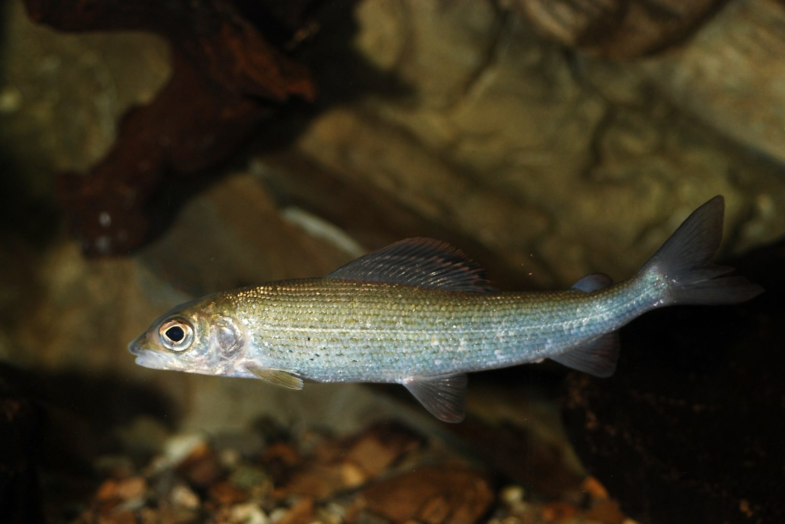

Rozpoznawanie i biologia
Wygląd i cechy rozpoznawcze
Lipień (Thymallus thymallus) należy do rodziny łososiowatych, ma więc płetwę tłuszczową, ale wyglądem wyraźnie odbiega od pstrąga. Najbardziej charakterystyczna jest wysoka, długa płetwa grzbietowa — tak zwana chorągiew — mieniąca się fioletem, purpurą i zielenią, u samców większa i barwniejsza niż u samic. Ciało jest smukłe, srebrzyste z perłowym lub lekko fioletowym połyskiem, pokryte stosunkowo dużą, wyraźną łuską ułożoną w regularne rzędy; na przedniej części tułowia występują drobne, nieregularne ciemne plamki. Głowa jest mała, a otwór gębowy niewielki i dolny — przystosowany do zbierania drobnego pokarmu, co odróżnia lipienia od dużych paszczy pstrąga czy troci. Świeżo złowiony lipień wydziela delikatny zapach przypominający tymianek, któremu gatunek zawdzięcza łacińską nazwę. Przeciętne ryby mierzą 25–35 cm, a okazy ponad 45 cm należą do rzadkości.
Środowisko i występowanie w Polsce
Lipień dał nazwę całej krainie rzecznej — kraina lipienia to odcinek poniżej krainy pstrąga: rzeka wciąż szybka i chłodna, ale szersza, głębsza i spokojniejsza, o dnie żwirowym z domieszką piasku. W Polsce lipień występuje przede wszystkim w rzekach podgórskich południa kraju — Dunajcu, Popradzie, Rabie, Sanie, Wisłoku, Bobrze, Kwisie czy Nysie Kłodzkiej — oraz w części rzek pomorskich i pojeziernych, między innymi w Drawie, Gwdzie i Słupi, gdzie był też wsiedlany. W odróżnieniu od terytorialnego pstrąga lipień jest rybą stadną: tam, gdzie złowiono jednego, często stoją kolejne. Wybiera równe rynny o wyraźnym, ale niezbyt rwącym prądzie, długie ploso poniżej bystrza i granice nurtu. Jest bardzo wrażliwy na zanieczyszczenia, ocieplenie wody i przekształcenia koryta, a dodatkowo silnie presjonowany przez kormorany — stąd regres wielu populacji.
Biologia i tarło
W przeciwieństwie do trącego się jesienią pstrąga lipień odbywa tarło wiosną, zwykle od marca do maja, przy temperaturze wody około 6–10°C. Ikra składana jest na płytkich, żwirowych prądach; samiec obejmuje samicę charakterystycznie rozłożoną chorągwią, a zapłodniona ikra zostaje częściowo przysypana żwirem. Inkubacja trwa krótko, około trzech do czterech tygodni, więc wylęg korzysta z wiosennego wysypu drobnych bezkręgowców. Lipień dojrzewa płciowo w wieku trzech do czterech lat i żyje przeciętnie do około dziesięciu lat. Rośnie wolniej niż pstrąg w żyznych wodach — ryba czterdziestocentymetrowa ma za sobą zwykle co najmniej sześć, siedem sezonów, co tłumaczy, dlaczego populacje tak trudno się odbudowują po przełowieniu lub klęskach środowiskowych.
Żerowanie według pór roku
Podstawą diety lipienia przez cały rok są bezkręgowce denne: larwy chruścików, jętek, widelnic i ochotek, kiełże oraz drobne mięczaki. Wiosną, tuż po tarle i okresie ochronnym, lipienie żerują głównie przy dnie, zbierając spływające larwy. Latem i wczesną jesienią coraz częściej podchodzą do powierzchni — podczas rojeń jętek i opadów mrówek czy chrząszczy potrafią żerować „z wierzchu” całymi godzinami, choć bardzo wybiórczo. Jesień to klasyczny szczyt sezonu lipieniowego: woda się klaruje i chłodzi, a ryby intensywnie żerują przed zimą. Zimą lipień pozostaje aktywny dłużej niż wiele innych gatunków, ale schodzi do głębszych rynien i pobiera pokarm wolniej, niemal wyłącznie przy dnie. Duże osobniki tylko sporadycznie atakują narybek — lipień do końca życia pozostaje przede wszystkim „owadożercą”. Jak zawsze: aktywność ryb bywa kapryśna i żaden kalendarz nie zastąpi obserwacji wody.
Przepisy i połów
Wymiar, okres ochronny i limit — orientacyjnie
Według ogólnych zasad PZW wymiar ochronny lipienia wynosi orientacyjnie 30 cm, okres ochronny trwa od 1 marca do 31 maja (chroni wiosenne tarło), a limit dobowy to orientacyjnie 3 sztuki; gatunek objęty jest też łącznym rocznym limitem dla ryb wędrownych i drapieżnych. Są to wartości orientacyjne na dzień publikacji: poszczególne okręgi podnoszą wymiar (np. do 35 cm), wydłużają ochronę lub wprowadzają całkowity zakaz zabierania lipieni z uwagi na stan populacji. Wody górskie i odcinki lipieniowe bardzo często funkcjonują jako łowiska specjalne z własnymi regulaminami — obowiązkiem haków bezzadziorowych, zasadą „złów i wypuść” czy odrębnymi zezwoleniami. Przed połowem koniecznie sprawdź aktualne zapisy w zezwoleniu okręgu, regulaminie łowiska i na pzw.org.pl.
Metody i przynęty
Lipień to ryba wręcz stworzona do wędkarstwa muchowego. Jesienią i zimą królują drobne nimfy na hakach 14–18, często z wolframową główką, prowadzone przy dnie metodą krótkiej lub długiej nimfy; w sezonie rojeń skuteczne bywają suche muchy — drobne imitacje jętek, CDC, klasyczne wzory typu Red Tag, na które lipień ma szczególną słabość. Prezentacja musi być precyzyjna: dryf bez najmniejszego ciągnięcia, cienkie przypony 0,10–0,14 mm. Spinning ultralekki również przynosi lipienie — najmniejsze obrotówki (rozmiar 00–1) i mikrowoblery do 3–4 cm — choć metoda ta selekcjonuje raczej śmielsze, średnie ryby. Na części wód lipieniowych przynęty naturalne są zabronione, dlatego znajomość regulaminu konkretnego odcinka jest niezbędna jeszcze przed wyborem metody.
Taktyka na rzece
Lipień, w odróżnieniu od pstrąga, nie chowa się pod przeszkodami, lecz stoi w otwartej, równej wodzie — kluczem jest znalezienie rynny o jednostajnym prądzie i odpowiedniej głębokości, najczęściej 0,8–1,5 m. Ponieważ ryby stoją stadnie, warto metodycznie obławiać jedno obiecujące miejsce wieloma rzutami, przesuwając tor dryfu co kilkadziesiąt centymetrów, zamiast szybko zmieniać stanowiska. Lipień bierze delikatnie i błyskawicznie wypluwa sztuczną przynętę, więc liczy się stały kontakt z nimfą i natychmiastowe, miękkie zacięcie; charakterystyczne są też „spóźnione” wyjścia do suchej muchy, przy których łatwo o zbyt nerwowe zacięcie. Spłoszony lipień wraca na żer szybciej niż pstrąg, więc po wyholowaniu ryby warto dać stanowisku kilka minut spokoju i łowić dalej. Niska, klarowna woda jesienią wymaga dłuższych przyponów i pozycji poniżej ryby, rzutów w górę nurtu.
Rekordy Polski — orientacyjnie
Rekordowe polskie lipienie osiągały około 50–55 cm długości i wagę zbliżoną do 2 kg; najsłynniejsze okazy pochodziły z Dunajca, Popradu i rzek sudeckich. W skali Europy największe lipienie łowi się w Skandynawii i w dorzeczu Dunaju, gdzie zdarzały się ryby przekraczające 60 cm. W dzisiejszych polskich realiach lipień 40-centymetrowy to bardzo dobra ryba, a 45 cm — okaz, którym można się chwalić latami. Dane rekordowe podajemy orientacyjnie; oficjalne rejestry rekordów prowadzą redakcje czasopism wędkarskich, a historyczne wyniki nie zawsze były weryfikowane współczesnymi standardami.
Kulinaria i „złów i wypuść”
Mięso lipienia jest delikatne i ceniono je od wieków, jednak dziś trzeba postawić sprawę jasno: populacje lipienia w większości polskich rzek są w regresie — z powodu ocieplania się wód, presji kormoranów, przekształceń koryt i dawnego przełowienia. Dlatego zdecydowanie wskazane jest stosowanie zasady „złów i wypuść”, nawet tam, gdzie regulamin dopuszcza zabranie ryby; wiele okręgów i łowisk wprowadziło zresztą całkowity zakaz zabijania lipieni. Lipień jest przy tym rybą delikatną w obsłudze: źle podebrany lub długo trzymany w ręce ma małe szanse na przeżycie. Używaj podbieraka z miękkiej, gumowanej siatki, haków bezzadziorowych, odhaczaj rybę w wodzie i wypuszczaj ją głową pod prąd, podtrzymując do momentu, aż sama odpłynie. To niewielki wysiłek, a od niego zależy przyszłość gatunku w naszych rzekach.
Ciekawostki
Łacińska nazwa Thymallus pochodzi od tymianku — starożytni autorzy, z Elianem na czele, opisywali tymiankowy zapach świeżo złowionej ryby i uważali go za dowód jej wyjątkowej czystości. Chorągiew lipienia pełni funkcje godowe i popisowe: samiec w czasie tarła okrywa nią samicę. Lipień bywa nazywany „damą polskich wód” — zarówno z powodu urody, jak i kapryśności w braniach. W przeciwieństwie do większości łososiowatych trze się wiosną, dzięki czemu jego okres ochronny tylko częściowo pokrywa się z pstrągowym — stąd właśnie w wielu okręgach wspólny limit dla obu gatunków. Wrażliwość lipienia na temperaturę sprawia, że jest jednym z pierwszych gatunków znikających z rzek dotkniętych ociepleniem i niżówkami, przez co bywa traktowany jako naturalny wskaźnik kondycji rzeki.
FAQ — najczęstsze pytania
Jak odróżnić lipienia od pstrąga na pierwszy rzut oka?
Najprościej po płetwie grzbietowej: u lipienia jest wysoka, długa i barwna, u pstrąga niewielka. Lipień ma też mały, dolny otwór gębowy, dużą regularną łuskę i srebrzysto-fioletowy połysk, podczas gdy pstrąg ma dużą paszczę, drobną łuskę i czerwone kropki z obwódką. Oba gatunki mają płetwę tłuszczową, więc sama jej obecność niczego nie rozstrzyga. Prawidłowe rozpoznanie ma znaczenie regulaminowe — gatunki różnią się okresami ochronnymi.
Kiedy jest najlepszy sezon na lipienia?
Tradycyjnie za szczyt sezonu uważa się jesień — od września do listopada — gdy woda jest klarowna, a ryby intensywnie żerują; wielu muszkarzy łowi lipienie także zimą na drobne nimfy. Wiosną obowiązuje okres ochronny (orientacyjnie 1.03–31.05), a wczesnym latem ryby bywają rozproszone. Pamiętaj jednak, że „najlepszy sezon” oznacza tylko statystycznie wyższą aktywność ryb, a nie gwarancję brań — o wyniku decydują stan wody, pogoda i prezentacja przynęty.
Czy lipienia można łowić na spinning?
Tak, o ile regulamin danej wody dopuszcza spinning — niektóre odcinki lipieniowe są zastrzeżone wyłącznie dla metody muchowej. Sprawdzają się najmniejsze obrotówki i mikrowoblery prowadzone wolno w rynnach. Spinning bywa skuteczny zwłaszcza przy podwyższonej, lekko przybranej wodzie, gdy łowienie na suchą muchę traci sens. Z uwagi na delikatność lipienia warto wymienić kotwiczki na pojedyncze haki bezzadziorowe, nawet jeśli regulamin tego nie wymaga.
Dlaczego lipieni jest coraz mniej?
Składa się na to kilka czynników naraz: ocieplanie się i obniżanie poziomu rzek, presja drapieżników (zwłaszcza zimujących stad kormoranów, dla których stadny lipień stojący w otwartej wodzie jest łatwym łupem), regulacje koryt niszczące tarliska oraz historyczne przełowienie. Okręgi PZW prowadzą zarybienia i zaostrzają przepisy, ale odbudowa populacji wolno rosnącego gatunku trwa wiele lat. Dlatego każda wypuszczona ryba ma realne znaczenie.
Źródła i weryfikacja
Treści mają charakter przeglądowy i edukacyjny. Wymiary, okresy ochronne i limity podano orientacyjnie według ogólnych zasad PZW na dzień publikacji — okręgi i łowiska specjalne wprowadzają własne, często surowsze regulacje, w tym całkowity zakaz zabierania lipieni. Zweryfikuj zasady w aktualnym zezwoleniu, regulaminie okręgu i na pzw.org.pl. Artykuł nie gwarantuje wyników połowu.